Freinage d'un véhicule
Présentation
On cherche à étudier le freinage d'urgence d'un véhicule de type fourgon sur une autoroute. Les données sont les suivantes :
la vitesse initiale est de 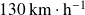 ;
le coefficient de frottement sur les trains avant et arrière du fourgon est 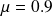 ;
le fourgon est chargé et pèse 3 tonnes ;
l'empattement (distance entre les axes des trains avant et arrière) est ;
son centre de gravité est à une hauteur du sol, et à
 derrière l'axe du train avant ;
derrière l'axe du train avant ;sa hauteur est et sa largeur L .
La question qu'on se pose ici est de connaître l'influence de la traînée sur la distance de freinage. On fait souvent l'hypothèse en sciences qu'elle peut être négligée. Le plus souvent pour être honnête, on ne s'est jamais vraiment posé la question, et on sait surtout qu'on n'est pas capable de trouver une solution analytique à ce problème de freinage si on inclut la traînée au modèle !
Cela tombe bien, aujourd'hui, on dispose des ressources d'un ordinateur et d'un langage de programmation.
Voici donc quelques compléments d'information qui vont vous permettre de savoir si vous aviez raison ou non de négliger cette action mécanique.
Expression de la traînée
La traînée est l'action mécanique qui s'oppose au mouvement d'un corps dans un fluide. Elle est définie par la relation suivante.
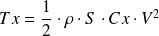
 est la masse volumique du fluide traversé, ici pour l'air
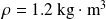
;
est la masse volumique du fluide traversé, ici pour l'air
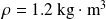
;est la surface de référence ou maître couple de la forme, elle peut être approchée par la formule de Paul Frère : ;
 est le coefficient de traînée}, pour le fourgon, on a
;
est le coefficient de traînée}, pour le fourgon, on a
; est la vitesse du corps en
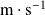
.
est la vitesse du corps en
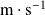
.
Question
Modéliser le freinage de ce véhicule, et en déduire l'équation différentielle qui régit son mouvement.
Modélisation mécanique
On isole le véhicule et on lui applique le principe fondamental de la dynamique pour un mobile en translation selon l'axe horizontal .

avec :
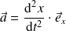 ;
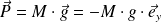 ;
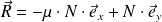 ;
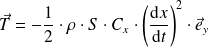 .
Équation différentielle
On obtient alors ces deux équations scalaires :
 ;
;
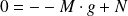 .
Ce système aboutit à l'équation différentielle suivante :
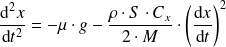
Question
Proposer un schéma numérique conforme à la méthode d'Euler qui permette de tracer l'évolution approchée de la vitesse du véhicule en fonction du temps.
Si vous êtes amenés à chercher une solution d'une équation différentielle telle que
, vous êtes en présence d'une équation d'ordre 2 (ici, l'ordre désigne la plus grande dérivée intervenant dans l'équation) et le schéma précédent ne va pas pouvoir vous permettre d'approximer la solution de cette équation. Cependant, si on s'intéresse au couple
, alors il vérifie l'équation
, avec
 l'application
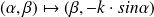
. On ramène par ce procédé de vectorisation les équations différentielles scalaires d'ordre
l'application
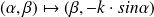
. On ramène par ce procédé de vectorisation les équations différentielles scalaires d'ordre
 à des équations d'ordre 1, mais à valeurs dans
.
à des équations d'ordre 1, mais à valeurs dans
.
Les méthodes numériques usuelles fonctionnent aussi bien pour des fonctions à valeurs vectorielles que réelles.
Remarque :
Ici, il y a deux manières d'écrire l'équation différentielle. En effet, nous pouvons la laisser telle quelle, et utiliser un procédé de vectorisation, ou la considérer comme une équation différentielle du premier ordre en 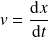 :

Cependant, ici, je poursuis avec la première expression de cette équation différentielle, ce qui me permettra également de tracer l'évolution de la distance de freinage.
Vectorisation
On pose 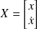 , avec 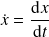 , ce qui consiste donc à vectoriser le problème.
Alors 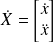 , avec 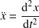 .
En posant la fonction scalaire 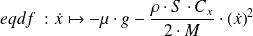 , on peut écrire 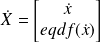 .
On peut aussi poser la fonction vectorielle 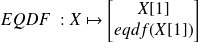 .
Schéma numérique
Le schéma numérique est alors celui classique de la méthode d'Euler explicite où
 est le pas temporel :
est le pas temporel :
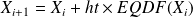 .
Question
Tracer l'évolution de sa vitesse en fonction du temps. En déduire son temps de freinage et sa distance de freinage.
Code
Voici mon programme complet.
## Freinage d'un véhicule## Importation des modulesimport numpy as np
import matplotlib.pyplot as plt
## Déclaration des constantesv0_kmh = 130 # vitesse initiale en km/h
v0 = v0_kmh / 3.6 # vitesse initiale en m/s
mu = 0.9 # facteur de frottement roues/sol
M = 3e3 # masse du fourgon en kg
E = 3 # empattement du véhicule en m
h = 0.7 # hauteur du centre de gravité du véhicule G en m
d = 1.7 # distance entre l'essieu avant et G en m
H = 3 # hauteur du véhicule en m
L = 1.8 # largeur du véhciule en m
rho = 1.2 # masse volumique de l'air en kg/m^3
Cx = 0.4 # coefficient de trainée pour le fourgon
g = 9.81 # accélération de la pesanteur en m/s^2
## Déclaration des fonctionsdef Surf_ref(H, L):
'''surface de référence ou maître couple de la forme, approchée par la formule de Paul Frère.'''return( 0.85 * H * L )
def trainee(rho, S, Cx, v):
'''trainée de la forme.'''return( 0.5 * rho * S * Cx * pow(v, 2) )
def eqdf(v, mu, g, M, rho, S, Cx):
return( - mu * g - (1 / M) * trainee(rho, S, Cx, v) )
def EQDF(X, mu, g, M, rho, S, Cx):
v = X[1]
return( np.array([v, eqdf(v, mu, g, M, rho, S, Cx)]) )
## InitialisationX0 = np.array([0, v0])
S = Surf_ref(H, L)
tmax = 5
N = 200
t = np.linspace(0, tmax, N)
ht = tmax / (N - 1) # pas temporel
XX = [X0]
compt = 0
while XX[-1][1] > 0 :
XX.append(XX[-1] + ht * EQDF(XX[-1], mu, g, M, rho, S, Cx))
compt += 1
df = XX[-1][0]
tf = t[compt]
for j in range(compt, N - 1):
XX.append(np.array([XX[-1][0], 0]))
distance = [elt[0] for elt in XX]
vitesse = [elt[1] for elt in XX]
plt.figure('Distance')
plt.plot(t, distance, color = 'red')
plt.xlabel('temps en secondes')
plt.ylabel('distance de freinage en m')
plt.title('Evolution de la distance de freinage')
plt.grid()
plt.savefig('Evo_dist_freinage.png')
plt.show()
plt.figure('Vitesse')
plt.plot(t, vitesse, color = 'blue')
plt.xlabel('temps en secondes')
plt.ylabel('vitesse du véhicule en m/s')
plt.title('Evolution de la vitesse au cours du freinage')
plt.grid()
plt.savefig('Evo_vit_freinage.png')
plt.show()
Résultats
On peut récupérer les données demandées dans la console.
>>> df
72.353282096242395>>> tf
4.0201005025125633Question
Discuter de l'influence du
sur la distance de freinage.
Durée de freinage sans traînée
On pouvait calculer la durée de freinage en supposant la traînée nulle, alors l'accélération vaut , et donc 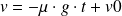 . la vitesse est nulle pour 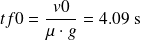 .
Distance de freinage sans traînée
Ensuite, 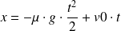 .
Donc pour 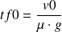 , 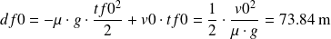 .
Écart avec le modèle avec traînée
La différence entre les deux distances de freinage est alors de 1,5 m. Négliger le frottement de l'air consiste donc à surévaluer ici la distance de freinage de 2 %.
Nous avions donc fait une hypothèse très acceptable en les négligeant jusqu'ici, et de plus, le résultat obtenu en les négligeant est un maximum pour la distance de freinage, ce qui est une erreur dans le « bon sens »
en terme de sécurité.